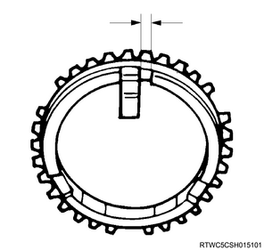
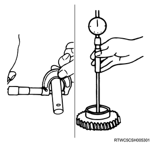

Reverse gear and 5th gear inspection (MUA)
1. 5th block ring inspection
1. Inspect the 5th block ring.
Note
- Replace parts as needed if excessive worn or damage is discovered during inspection.
2. Measure the 5th block ring using a feeler gauge.
Note
- Measure the gap between the block ring and the dog gear.
- Replace the 5th block ring if the measured value exceeds the limit.
Standard： 1.5 mm { 0.059 in }
Limit： 0.8 mm { 0.031 in }

2. Reverse block ring inspection
1. Inspect the reverse block ring.
Note
- Replace parts as needed if excessive worn or damage is discovered during inspection.
2. Measure the reverse block ring using a feeler gauge.
Note
- Measure the gap between the block ring and the dog gear.
- Replace the reverse block ring if the measured value exceeds the limit.
Standard： 1.5 mm { 0.059 in }
Limit： 0.8 mm { 0.031 in }
3. Insert inspection
1. Measure the insert using a vernier caliper.
Note
- Measure the gap between the insert key and block ring groove.
- Replace the insert key and block ring if the measured value exceeds the limit.

Standard： 3.59 to 3.91 mm { 0.141 to 0.154 in }
Limit： 4.1 mm { 0.161 in }
2. Measure the insert using a feeler gauge.
Note
- Measure the gap between the insert key and clutch hub.
- Replace the insert key and clutch hub if the measured value exceeds the limit.
Standard： 0.09 to 0.31 mm { 0.0035 to 0.0122 in }
Limit： 0.4 mm { 0.016 in }

4. 5th gear inspection
1. Measure the 5th gear using a dial gauge.
Note
- Measure the inner diameter of the 5th gear using an inside dial gauge.
- Replace the 5th gear if the measured value exceeds the limit.
Standard： 32.000 to 32.013 mm { 1.2598 to 1.2604 in }
Limit： 32.100 mm { 1.264 in }

5. Counter reverse gear inspection
1. Measure the reverse gear using a dial gauge.
Note
- Measure the inner diameter of the counter reverse gear using an inside dial gauge.
- Replace the counter reverse gear if the measured value exceeds the limit.
Standard： 48.000 to 48.013 mm { 1.8898 to 1.8903 in }
Limit： 48.100 mm { 1.894 in }
6. Reverse idle gear inspection
1. Measure the idle shaft using the micrometer.
Note
- Measure the diameter of the reverse idle shaft.
2. Measure the reverse idle gear using a dial gauge.
Note
- Measure the inner diameter of the reverse idle gear.

3. Calculate the clearance from measured value.
Note
- Measure the inner diameter of the reverse idle gear and the reverse idle shaft, and calculate the clearance of the idle gear and idle gear shaft.
- Replace the idle gear and idle shaft if the measured value exceeds the limit.
Standard： 0.041 to 0.074 mm { 0.0016 to 0.0029 in }
Limit： 0.150 mm { 0.0059 in }
7. Revers - 5th clutch hub inspection
1. Inspect the reverse - 5th clutch hab.
Note
- Set the dial indicator to the reverse 5th clutch hub.
- Move the reverse 5th clutch hub left to right as far as possible.
- Record the reading numerical value from the dial indicator.
- Replace the reverse - 5th clutch hub if the measured value exceeds the limit.
Standard： 0.0 to 0.2 mm { 0.000 to 0.008 in }
Limit： 0.3 mm { 0.012 in }

8. Main shaft rear bearing inspection
1. Measure the main shaft rear bearing using a dial gauge.
Note
- Measure the play of the main shaft rear bearing.
- Replace the main shaft rear bearing if the measured value exceeds the limit.
Standard： 0.2 mm { 0.008 in }